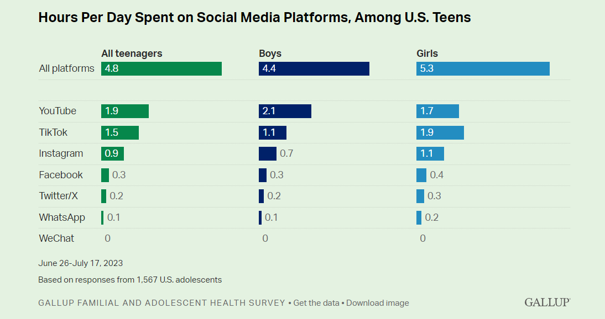

Teenagers' screen time isn't solely dedicated to schoolwork or research; a substantial portion goes to social media. On average, teens spend 4.8 hours per day on all social media platforms combined. However, there's a noticeable difference when we examine this data by gender. Boys average 4.4 hours, while girls spend an average of 5.3 hours per day on social media platforms.
Now, let's dig deeper into specific social media platforms. YouTube reigns as the most popular choice among teenagers, with an average daily usage of 1.9 hours. TikTok, Instagram, and Snapchat follow closely. This data not only reflects the preferred platforms but also highlights how social media has become an integral part of teenage life.
